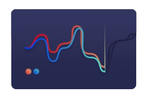
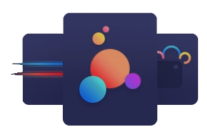
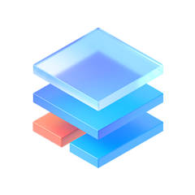

The Engine of Exchange
TKtech is the white label platform for exchanges,
brokerages and tokenization of assets.

Carbon Offset Exchange
Carbon offsets are essentially vouchers to make up the difference. Businesses can take near-term action to meet carbon reduction goals, while they transition to more sustainable business practices. The purchase and sale of carbon offsets can be conducted through a carbon offset exchange.
Digital Contract
A digital contract is a type of contract that provides a fixed payout if the underlying market outcome is equal or over predicted. As long as traders correctly predict the outcome, they’ll make a profit. If their prediction is incorrect, they’ll lose the premium they paid.

Data Analysis
Data Analysis Our data analysts spend their time collecting on-field and off-field data from various sources and then analyzing and interpreting that data looking for meaningful insights. The data includes player and team performance, fan behaviour, and comparable purchase.

Exchange Engine
Full-stack software for digital and alternative contract exchange operators.
Data Feed
Easy access to comprehensive and reliable data feeds
Market Maker
Remarketer automated market making software and Managed Liquidity options.
We have continuously researched high-end technical platforms based on the data provided from the user's experience. We have been growing steadily ever since the organization of our establishment. Since conception, our team has expanded from just 10 to over 100 intellectuals. we have a high-class technical team ready to fulfill your requirements. To face the ever growing and evolving market, we are able to customize your product independently.
We looked to TKtech for a white label software solution,
freed up critical company resources to build other important aspects of our business.
CONTACT US